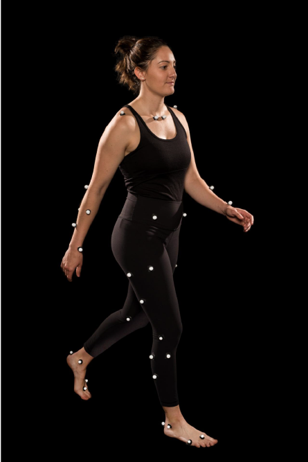
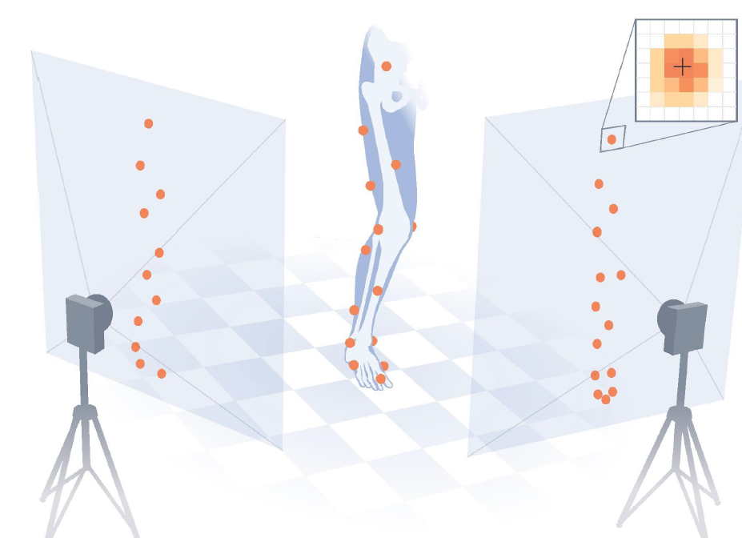
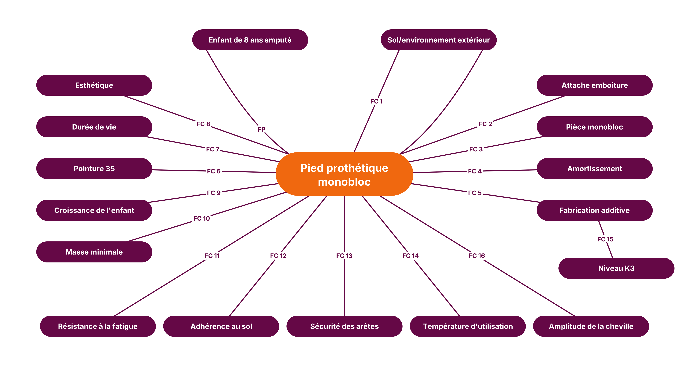
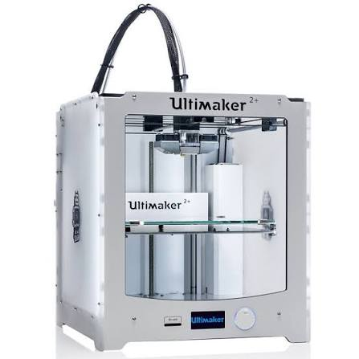

Arts et Métiers Paris – Plateforme collaborative des livrables
Mapping des brevets – Pieds prothétiques
Analyse de brevets | Complexité d'assemblage vs Capacité d'adaptation mécanique
Capacité d'adaptation mécanique (Y)
Filtres :
Complexité d'assemblage / Architecture (X)
Légende :
Lame Composite
Mécanisme Articulé
Amortisseur / Ressort
Système Réglable
Cahier des charges fonctionnel
Contexte du projet
Dans le cadre de notre formation, ce projet a pour objectif de concevoir et dimensionner un pied prothétique destiné à un enfant de pointure 35, fabriqué par impression 3D en PLA, pour un poids de référence de 270 N. Le projet constitue un support permettant de mobiliser progressivement les compétences développées au cours des différentes unités d’enseignement, notamment en mécanique des milieux continus, résistance des matériaux, mécanique, matériaux et conception, afin de les appliquer directement à une problématique concrète d’ingénierie biomécanique.
La conception du pied s'appuie sur une analyse expérimentale de la marche. Dans un premier temps, des données sont acquises sur un sujet non amputé afin de caractériser le comportement du membre inférieur lors de la marche. Des marqueurs réfléchissants sont placés sur différents repères anatomiques de la jambe et du pied. Un système de caméras permet de suivre leurs positions au cours du mouvement et ainsi de reconstruire la cinématique des différents segments. Cette méthode permet notamment d'obtenir l'évolution temporelle des angles articulaires au cours du cycle de marche. Le protocole présenté par Uchida et Delp repose sur ce principe de suivi des marqueurs et de calcul des angles articulaires à partir de la cinématique du mouvement.


Marqueurs et prise de données
La capture du mouvement est réalisée dans une salle équipée d'une plateforme de force intégrée au sol. Celle-ci mesure les forces de réaction du sol ainsi que les moments associés lors de la phase d'appui. Les données cinématiques et les données de force peuvent alors être combinées afin de déterminer les sollicitations mécaniques exercées sur le membre inférieur. Le protocole de TP prévoit notamment le calcul des angles de la cheville, du genou et de la hanche, puis le transport des moments mesurés au niveau de la plateforme vers les centres articulaires de la cheville, du genou et de la hanche.
Réaction du sol
À partir de ces mesures, un sujet non amputé est utilisé comme référence afin d'obtenir les caractéristiques d'une marche de référence. Une seconde acquisition est ensuite réalisée avec le même sujet équipé des pieds prothétiques étudiés. Les deux séries de mesures peuvent alors être comparées afin d'identifier les différences de comportement entre la marche de référence et la marche avec les pieds prothétiques.
Capture du mouvement
L'objectif du projet est ainsi de concevoir un pied dont le comportement se rapproche autant que possible de celui observé lors de la marche de référence, tout en respectant les contraintes mécaniques imposées par le cahier des charges. Le pied devra notamment résister aux sollicitations appliquées pendant la marche, présenter une rigidité adaptée et limiter les perturbations du mouvement susceptibles d'entraîner une sollicitation excessive des autres articulations. Cette approche rejoint l'intérêt de l'analyse quantifiée de la marche dans l'étude des dispositifs prothétiques, qui permet d'objectiver les différences de comportement entre différentes situations d'appareillage.
Vidéo au ralenti du sujet en marche à ajouter
Marche au ralenti
Bête à cornes
Diagramme pieuvre

Etude 1 hypothèse poutres
Cette première étude vise à simplifier le comportement mécanique du pied prothétique en le
modélisant comme une poutre, afin d'établir un premier dimensionnement analytique.
Dans un premier temps, une poutre à section rectangulaire constante a été étudiée. Les résultats
mettent en évidence un compromis entre les critères de résistance et de rigidité.
Lorsque la section est dimensionnée pour respecter le critère de contrainte, la rigidité obtenue
reste insuffisante, avec une flèche calculée de 23 mm. À l'inverse, lorsque le dimensionnement
vise à respecter le critère de rigidité, les contraintes dépassent la limite admissible. Dans le
cadre de ces hypothèses, une section rectangulaire constante ne permet donc pas de satisfaire
simultanément les exigences de résistance et de rigidité.
L'espace ci-dessous est réservé à la feuille de calcul consacrée à une poutre encastrée à sa
base, de section rectangulaire variable : sa largeur est constante et sa hauteur évolue le long
de la poutre. Cette modélisation permet d'étudier l'effet de cette variation de section sur les
contraintes et la flèche.
Notes de calcul de poutre
Premier calcul de poutre pour pied prothétique
Mamadou DIENE ; Natan BERISSON
PGE1A – Arts et Métiers
1
Données et problématique
Figure 1 — Poutre à section variable : vue de côté et vue de dessus.
Effort nominal
\(F=270\,\mathrm{N}\)
Longueur
\(L=167{,}5\,\mathrm{mm}\)
Largeur
\(b=40\,\mathrm{mm}\)
Module d’Young (PLA)
\(E=2892\,\mathrm{MPa}\)
Limite élastique (PLA)
\(R_e=80\,\mathrm{MPa}\)
Flèche visée
\(\nu=23\,\mathrm{mm}\)
Coefficient de sécurité : 4 \(\;\Rightarrow\;F=1080\,\mathrm{N}\).
Problématique : dimensionner cette poutre en résistance (\(\sigma_{\max}\le 80\,\mathrm{MPa}\)) et en rigidité (\(\nu=23\,\mathrm{mm}\)).
2
Résistance
On coupe la poutre à l’abscisse \(x\) et on note \(G_1\) le centre de la section de coupe.
Le moment fléchissant est donc \(M_{fz}(x)=-F\cos(20^\circ)\,(L-x)\), maximal en valeur absolue à l’encastrement : \(|M_{fz}|_{\max}=F\cos(20^\circ)\,L\).
Figure 3 — Diagramme du moment fléchissant.
Contrainte maximale (fibre extrême, à une distance \(h/2\) de la fibre neutre) :
L’expression étant complexe à intégrer analytiquement, une résolution numérique permet de déterminer les dimensions donnant une flèche de \(\nu=23\,\mathrm{mm}\) : \(h_0=18\,\mathrm{mm}\) et \(h_L=2{,}86\,\mathrm{mm}\).
4
Essai : changement de géométrie
Essai : changeons de géométrie, \(h(x)=\sqrt{x}\), c’est-à-dire que l’allure de la poutre suit une fonction racine.
Définissons \(h(x)\) à partir de la condition \(\sigma_{\max}\le R_e\) :
Primitives utiles : \(\displaystyle\int\sqrt{1-\tfrac{x}{L}}\,\mathrm{d}x=-\tfrac{2}{3}L\left(1-\tfrac{x}{L}\right)^{3/2}\) et \(\displaystyle\int(-1)\,\mathrm{d}x=-x\). Donc
A.N. : \(\nu(L)=14{,}15\,\mathrm{mm}\neq 23\,\mathrm{mm}\) \(\Rightarrow\) pas acceptable.
6
Conclusion
L’étude analytique d’une poutre à section rectangulaire constante met en évidence l’absence de solution conciliant les critères de résistance mécanique et de rigidité :
Critère de résistance (contrainte) : pour garantir la sécurité sous charge extrême (1080 N), une section minimale de \(b=40\,\mathrm{mm}\) et \(h=18\,\mathrm{mm}\) est requise. Cependant, cette poutre est trop rigide et ne fléchit pas assez.
Critère de rigidité (flèche) : pour obtenir exactement la souplesse ciblée de 23 mm, il faut réduire la hauteur à \(h=12{,}15\,\mathrm{mm}\). Mais la contrainte sous charge extrême dépasse alors la limite élastique \(R_e=80\,\mathrm{MPa}\) du PLA.
La tentative de concilier ces deux exigences par une poutre à section variable se heurte peut-être aux limites physiques de la RDM classique et de ses théories de base, ce qui expliquerait la difficulté à trouver une telle poutre :
Petits déplacements : la flèche de 23 mm représente presque 14 % de la longueur (167,5 mm), ce qui pourrait invalider l’hypothèse de petits déplacements.
La géométrie de poutre droite pleine ne permet pas de satisfaire le cahier des charges en RDM analytique. Pour débloquer la conception, les étapes suivantes sont préconisées :
Évolution géométrique : abandonner la poutre droite pour une lame courbe en C ou en L.
Validation numérique (FEM) : réaliser une simulation par éléments finis 3D sous CAO.
Etude 2 : PLA

Imprimante 3D Ultimaker
Fiche technique du PLA Ultimaker
Introduction
Les propriétés du PLA ont été déterminées et comparées aux données de la fiche technique du fabricant lors d’un TP de flexion en trois points. L’interprétation des résultats et certaines hypothèses s’appuient sur les travaux d’A. Louessard, Conception et prototypage de pied prothétique obtenu par fabrication additive, thèse HESAM Université / Arts et Métiers, 2023.
Dans le projet, la lame du pied prothétique travaille en flexion : lors de la marche, elle se comporte comme une poutre encastrée côté jambe et chargée à son extrémité. La raideur du pied et la restitution d’énergie dépendent donc de sa raideur en flexion. Or, en flexion, la contrainte normale est nulle sur la fibre neutre et maximale sur les fibres extrêmes : la matière située au cœur de la section travaille très peu.
On ne met donc pas de matière sur la ligne neutre (figure 1 ci-dessous) : la pièce est imprimée avec des parois et un remplissage faible (modèle « creux »). Sa raideur est peu pénalisée puisque le moment quadratique I dépend surtout de la matière éloignée de l’axe neutre. Mais une pièce imprimée est anisotrope (sens d’impression, adhésion entre couches) et son comportement dépend du remplissage et des parois.
L’objectif du TP était de caractériser le comportement mécanique d’une poutre en régime de flexion simple. Pour cela, il fallait :
Réaliser un essai de flexion 3 points selon la norme ISO 178 (version simplifiée).
Transformer la courbe brute effort-déplacement en courbe contrainte-déformation.
Déterminer les propriétés mécaniques du matériau dans le domaine élastique.
Montage expérimental — Essai de flexion 3 points
Données expérimentales
Résultats de l’essai de flexion 3 points
Classeur Excel des mesures et calculs expérimentaux.
Nos mesures sont du même ordre de grandeur que la fiche : les écarts vont de 0 à 17 %, avec un module identique pour XY. Les écarts positifs dominent pour σmax et E dans les sens YZ et Z. Pour XY et YZ, la fiche annonce l’absence de rupture au-delà de 10 % de déformation, alors que nos éprouvettes perdent leur portance vers 5 à 6 % : la comparaison de εfB n’a donc de sens que pour Z, et c’est avec ε à σfM que l’on compare les autres sens. Hypothèses expliquant ces différences :
Nombre d’éprouvettes. On en a testé 2 par sens au lieu de 5. L’écart entre deux éprouvettes du même sens atteint 7 % sur σmax (YZ : 97,3 et 90,7 MPa) et 4 % sur E (XY). Plusieurs écarts à la fiche, comme −8,5 % sur σmax en XY, sont donc du même ordre que la dispersion.
Préparation des éprouvettes et tare à 1 N. Certaines pièces étaient mal ébavurées et l’enregistrement ne commence qu’à 1 N. Le déplacement initial (de 0,2 à 1,8 mm selon les essais) est donc compté dans la déformation de la colonne D. Ce décalage représente environ 0,5 % de déformation. Corrigées de ce décalage, les valeurs de ε à σfM passent à 3,96 % (XY), 4,38 % (YZ) et 3,06 % (Z), soit −3,5 %, −0,5 % et −10 % par rapport à la fiche. Les bavures créent aussi des défauts de contact et des concentrations de contrainte.
Géométrie hors norme. Nos éprouvettes (128 × 15 × 8 mm) sont deux fois plus épaisses que l’éprouvette normalisée de l’ISO 178 (80 × 10 × 4 mm). Elles comptent plus de couches, refroidissent plus lentement et ont davantage de défauts potentiels. La déformation est de plus calculée à partir du déplacement de la traverse, et non mesurée au déflectomètre comme le prévoit la norme : la complaisance de la machine et l’indentation aux appuis sont comptées dans la flèche.
Vitesse d’essai. Les données enregistrées donnent 10 mm/min, contre 5 mm/min pour la résistance et 1 mm/min pour le module dans la fiche. Le PLA étant viscoélastique, une vitesse plus élevée augmente le module et la résistance, ce qui va dans le sens des écarts positifs observés en YZ et en Z.
Paramètres d’impression. L’imprimante, la température, la hauteur de couche, le motif de remplissage et le refroidissement ne sont pas ceux du fabricant. Ils agissent surtout sur l’adhésion entre couches.
2. Effet du sens d’impression
L’ordre mesuré est YZ > XY > Z pour la résistance (94,0 / 83,8 / 69,4 MPa) et pour ε à σfM (4,84 / 4,52 / 3,55 %). Pour le module, YZ ≈ XY > Z (2 934 / 2 881 / 2 503 MPa). Le sens Z est le plus faible : −17 % de résistance et −13 % de module par rapport à XY, et une rupture fragile au pic de contrainte (εfB ≈ ε à σfM ≈ 3,55 %).
Sens Z. La barre est dressée dans le sens de l’empilement : la traction des fibres extrêmes s’exerce perpendiculairement aux couches. L’effort est repris par les soudures entre couches, plus faibles que le filament lui-même et plus poreuses (la thèse rapporte, pour les pièces à filaments renforcés, des porosités principalement situées entre les couches). La rupture se fait par décohésion entre deux couches, de façon brutale.
Sens XY et YZ. La contrainte de traction est parallèle aux filaments. C’est la matière du filament qui travaille, d’où une résistance plus élevée et une rupture plus progressive.
XY contre YZ. Notre mesure donne un avantage à YZ (+12 % de résistance), alors que la fiche donne l’inverse (XY +10 %).
Tous les résultats concordent sur un point : le sens Z est à éviter, avec un rapport σZ/σXY de 0,83 mesuré et 0,67 d’après la fiche.
3. Application au projet de pied prothétique
Sens d’impression optimal. La lame travaille en flexion : la contrainte maximale s’exerce le long de sa longueur, sur ses faces supérieure et inférieure. On imprime donc la lame avec sa longueur dans le plan du plateau (sens XY ou YZ), jamais selon Z. Entre XY et YZ, on retient XY (lame à plat, couches empilées dans l’épaisseur) : c’est le sens le plus cohérent avec la fiche et avec la littérature citée par la thèse, qui recommande d’imprimer avec les couches perpendiculaires à la direction de la force en flexion 3 points (résultat établi pour des composites à fibres continues). Notre mesure favorise légèrement YZ, mais l’écart est dans la dispersion : YZ est peut-être à tester sur une lame réelle avant de trancher.
Remplissage et répartition de matière. Les résultats conduisent à :
Peaux haute et basse épaisses (au moins 2,4 mm, soit 16 couches de 0,15 mm). C’est le paramètre qui pilote la raideur (abaque, tableau 2) et la tenue de la fibre extrême.
Parois de 4 mm (5 lignes), comme sur la figure 1 du sujet. Elles ont peu d’effet sur la raideur en flexion, mais elles protègent le cœur et reprennent le cisaillement et la stabilité locale.
Remplissage de 20 % (triangulaire, comme dans la thèse qui utilise un remplissage triangulaire à 30 %) plutôt que 10 %. Il ne coûte presque rien en raideur (la thèse rapporte aussi que le taux de remplissage influence peu les propriétés en flexion), mais il soutient les peaux contre l’indentation et reprend le cisaillement, deux mécanismes qui ont dégradé nos poutres creuses.
Zones pleines (100 %) aux points d’encastrement, d’introduction de l’effort et à la jonction entre lame avant et lame du talon. Dans la thèse, le prototype en PLA Tough s’est rompu à cet endroit après environ 23 000 cycles, ce qui est bien inférieur à l’attendu.
Gain de masse réaliste. À 10 % de remplissage, nos essais donnent −17 % de raideur et −23 % de résistance pour environ 17 à 27 % de matière en moins. L’allègement n’est donc pas gratuit pour une section de 8 mm. Le modèle prévoit un bénéfice plus marqué pour des lames plus épaisses, où la zone neutre est plus grande ((hi/h)3 croît avec l’épaisseur), mais cela reste à vérifier par essai.
Valeurs à retenir pour le calcul par éléments finis. On suit la modélisation de la thèse : matériau isotrope linéaire élastique, avec un coefficient de Poisson de 0,35 (valeur du PLA retenue dans la thèse). Pour la résistance, on utilise une limite élastique conventionnelle plutôt que σmax, le PLA étant fragile et la courbe déjà non linéaire avant le pic. On la définit comme la contrainte où le module sécant perd 5 % par rapport à la pente initiale.
Tableau 4 — Données d’entrée proposées pour le calcul par éléments finis (sens XY)
Paramètre
Valeur
Source et commentaire
Module E, zones pleines (peaux, parois, zones à 100 %)
2,8 GPa
Mesuré en XY (2 803 MPa sur la plage ISO, 2 881 MPa sur le domaine élastique), proche de la fiche (2 882 MPa).
Module E, zone de remplissage
τ · E (soit 0,2 × 2,8 GPa à 20 %)
Loi des mélanges utilisée dans la thèse.
Limite élastique conventionnelle, zones pleines
≈ 69 MPa
Mesuré en XY (66,7 et 70,7 MPa), pour une déformation d’environ 2,5 %. σmax vaut 83,8 MPa.
Limite élastique d’une poutre creuse à 10 %
≈ 54 MPa (apparent)
Mesuré en XY 10 % ; σmax vaut 64,5 MPa.
Coefficient de Poisson
0,35
Valeur retenue dans la thèse pour le PLA.
Coefficient de sécurité
4
Valeur adoptée dans le CdCF.
Ces valeurs sont statistiques.
4. Limites et suites
Pour consolider : 5 éprouvettes par configuration, mesure de la flèche au déflectomètre, essai à la vitesse de la fiche (5 mm/min), coupe d’une éprouvette creuse pour mesurer les épaisseurs réelles de parois et de peaux, essai d’une configuration creuse en YZ.
Les écarts à la fiche sont à interpréter avec prudence tant que la correction du décalage initial (ε0) n’est pas appliquée de façon homogène à toutes les déformations.
Références
A. Louessard, Conception et prototypage de pied prothétique obtenu par fabrication additive, thèse HESAM Université / Arts et Métiers, 2023 (HAL tel-04439541) : équation I-15 et annexe A (module de flexion équivalent), chapitre III (choix des matériaux, tableau III-12, modélisation du remplissage, essais de fatigue).
Fiche technique Ultimaker PLA : propriétés mécaniques (ISO 178). Norme ISO 178 : détermination des propriétés en flexion.
Méthodologie d'analyse et de classement des brevets
Guide détaillé pour comprendre le positionnement des prothèses sur le graphe
Ce mapping positionne chaque brevet selon une double échelle analytique : l'effort de conception structurelle (axe X) face aux performances fonctionnelles offertes à l'utilisateur (axe Y).
XComplexité d'assemblage / Architecture (Échelle de 0 à 11)
Évalue le nombre de composants distincts, la complexité des liaisons mécaniques et les interfaces d'assemblage (intégration de plaques multiples, boulonnerie, coutures de fibres).
Exemple score bas (X ≈ 3) :Une lame monobloc ou un design simple couplé directement (ex: US 2021/0186716).
Exemple score élevé (X ≈ 8) :Une architecture multi-plaques complexes aux courbures multiples entrelacées (ex: EP 3 981 366).
YCapacité d'adaptation mécanique (Échelle de 0 à 5)
Évalue l'étendue de l'adaptation fonctionnelle, qu'elle soit passive (déformation géométrique sous charge) ou active/réglable (ajustement manuel ou dynamique de la rigidité par l'utilisateur).
Exemple score nul (Y = 0) :Une géométrie complètement rigide ou passive sans flexibilité revendiquée (ex: EP 3 981 366).
Exemple score maximal (Y = 5) :Un système avec molettes de réglage de rigidité ou modification radicale marche/course (ex: EP 3 193 789).